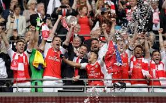
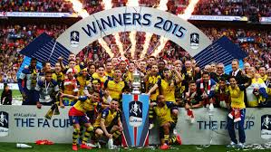
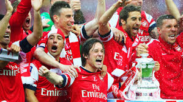

Arsenal fended off Chelski, winning 2-1. Chelsea were on the line for the double in Conte's first season at the club. However an early strike from Alexis Sanchez and a late header from Aaron Ramsey was enough for the Gunner's third trophy in four years. COYG.

2015
Arsenal absolutely trounsed the midlands team which have since fallen on hard times. The 4-0 thrashing was not a great game to watch but it was perfectly clear the Gunners had more than enough quality to play the Villans off the pitch.

2014
Without winning anything for 9 years, a trophy was absolutely imperative here. Hull City seemed an easy victory, however proved anything but. Arsenal had a a tough time getting to the final, beating Wigan on penalties. Although the Gunners went 2-0 down early, the quality shone through and Arsenal won 3-2

2005
All we need to know here is that Patrick Vieria won the FA Cup over Man U with a penalty - which ended up being his last kick for the gunners.